Hi everyone 👋
I’d like to share a quick use case we implemented in ServiceNow.
Use Case Overview
Create Product and Sold Product records in ServiceNow by simply submitting a Catalog Item with an Excel file attachment containing product details.
Approach
- Create a Catalog Item.
- Create a Flow that gets triggered when the Catalog Item is submitted.
- In the Flow, trigger a Transform Map that processes the uploaded Excel file.
- Inside the Transform Map, use Transform Scripts to Create Products and Sold Products.
- After record creation, add a comment to the RITM containing clickable links to the newly created Products and Sold Products.
Implementation Steps
Create Products and Sold Products using a Catalog Item in ServiceNow.- The Catalog Item will have one primary question: "Number of products to create" with options:
- Single Product
- Multiple Products
- If Single Product is selected:
Show questions for Name of Product, Product Model Number, Model Category, and whether accounts need to be linked (Yes/No).
If Yes is selected, show a question to select accounts to be linked to the Sold Product.
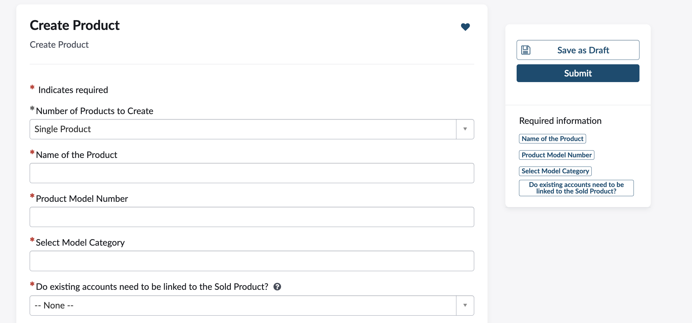
- If Multiple Products is selected:
Show a link to download the product details Excel template.
Ask for an Excel attachment containing the filled product details.
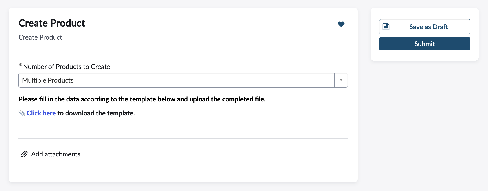
Configure a Flow
- Create a new Flow in Flow Designer triggered on Service Catalog, currently showing flow handling multiple products only
- Look Up Attachment Record: Retrieve the Excel file attachment belonging to the requested item submitted via the Catalog Item.
- Copy Attachment: Create a copy of the attachment to safely process/import data without affecting the original file.
- Get Import Set: Trigger a custom Flow action that calls a method - getImportSetSysId from Script Include - KapCreateProductUtils method passing the Requested Item sys_id. This action loads the Excel attachment data into a new Import Set table, links each imported row to the Requested Item for traceability, and returns the Import Set record ID for further processing.
- Look Up Data Source Record: Reference the Data Source by its sys_id, corresponding to the import set or Excel data source configuration.
- Look Up Records in Import Set: Find records in the import set created for the multiple products.
- Trigger Transform Map: Run the Transform Map to map and create actual Product records in the target table from the import set data.
-
Create Script Include:
var KapCreateProductUtils = Class.create(); KapCreateProductUtils.prototype = { initialize: function() {}, getImportSetSysId: function(ritmSysId) { var dataSourceSysId = gs.getProperty('kap.create.product.data.source.sys.id'); var grDataSource = new GlideRecord('sys_data_source'); if (grDataSource.get(dataSourceSysId)) { var loader = new GlideImportSetLoader(); var importSetRec = loader.getImportSetGr(grDataSource); loader.loadImportSetTable(importSetRec, grDataSource); importSetRec.state = "loaded"; importSetRec.update(); var importTableName = importSetRec.getValue("table_name"); if (!importTableName) { gs.error("Import Set Table Name is null. Cannot proceed."); return; } var rowGR = new GlideRecord(importTableName); rowGR.addQuery("import_set", importSetRec.getUniqueValue()); rowGR.query(); while (rowGR.next()) { rowGR.u_requested_item = ritmSysId; rowGR.update(); } return importSetRec.getUniqueValue(); } return null; }, triggerTransformMap: function(importSetRecSysID) { var transformSysId = gs.getProperty('kap.create.product.transform.map.sys.id'); var transformWorker = new GlideImportSetTransformerWorker(importSetRecSysID, transformSysId); transformWorker.setBackground(true); transformWorker.start(); }, type: 'KapCreateProductUtils' }; - Delete Attachment: Remove the copied attachment after processing to clean up.
- Update Requested Item Record: Update the original Requested Item record, for example, by adding comments or status to reflect completion.
- Add a Work Note or comment to the Requested Item with clickable links to the newly created records.
- Activate the Flow to enable this automation.
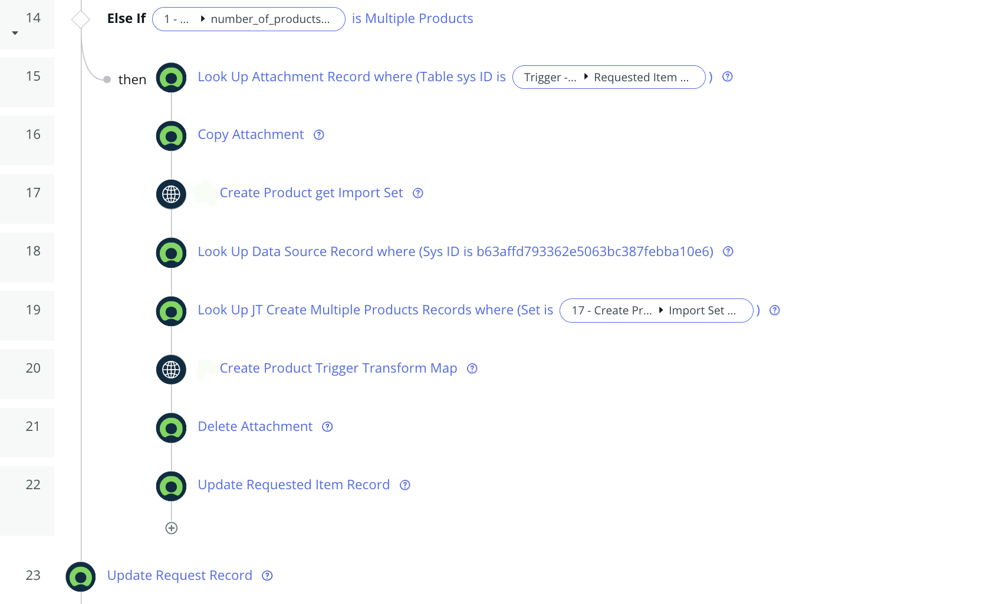
Here are the important steps in creating a custom action to fetch import set sys_id
Step 1 - Input Step
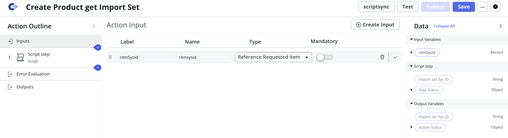
Step 2.1 - Script Step

Step 2.2 - Script Step
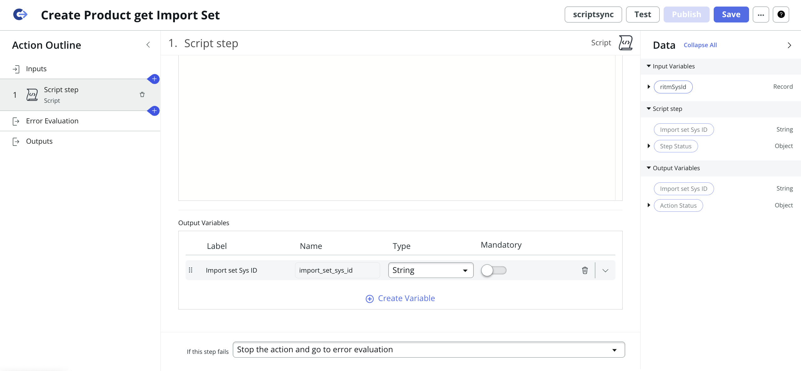
Step 3 - Output Step
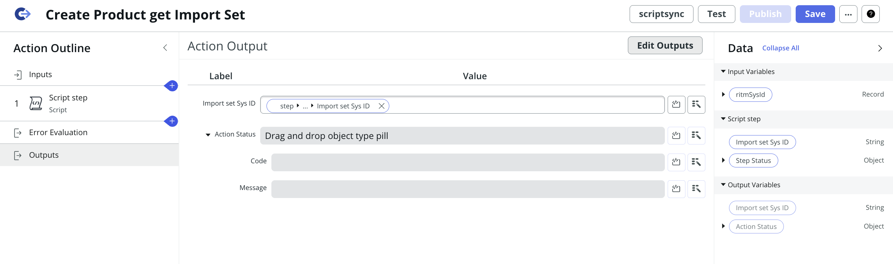
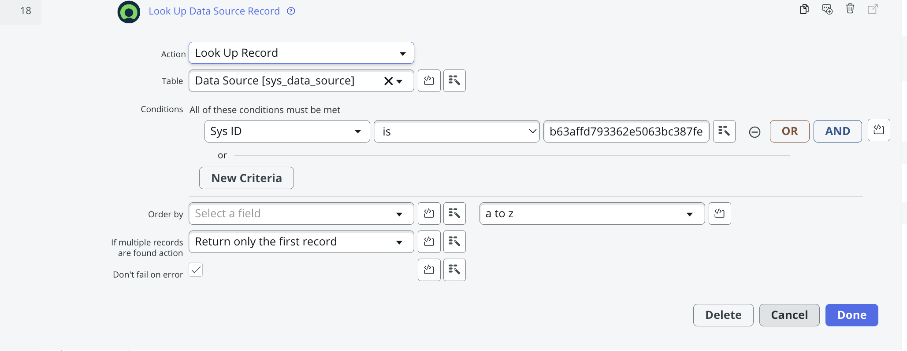
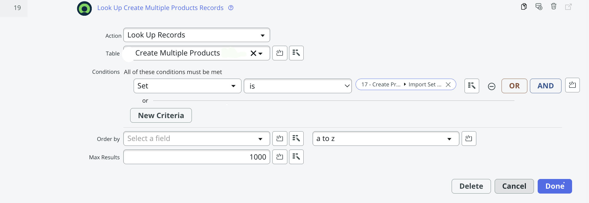
Here are the important steps in creating a custom action to Trigger Transform Map
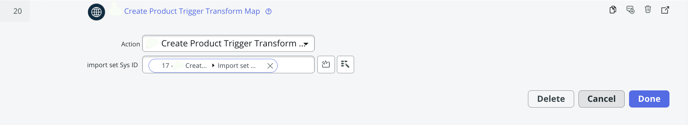Step 1 - Input Step
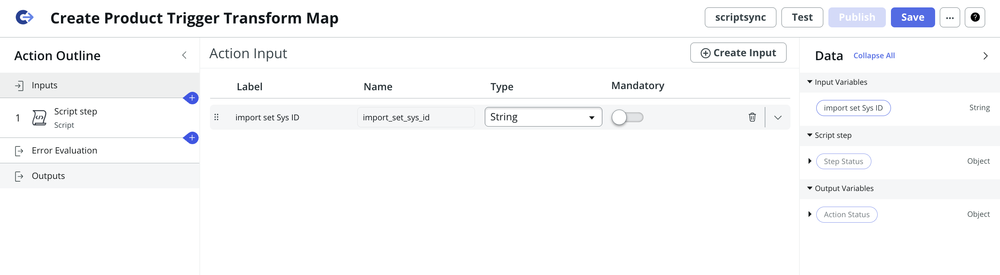
Step 1 - Input Step
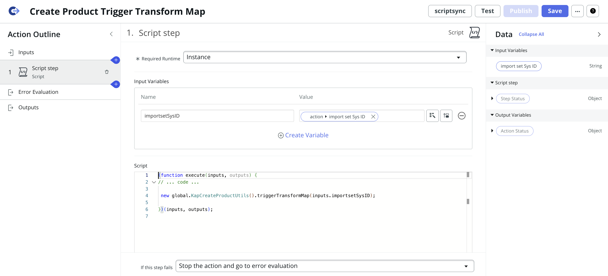
Transform Maps
- Create a new Import Set Table by providing the blank excel template(I selected existing as I have already created it) 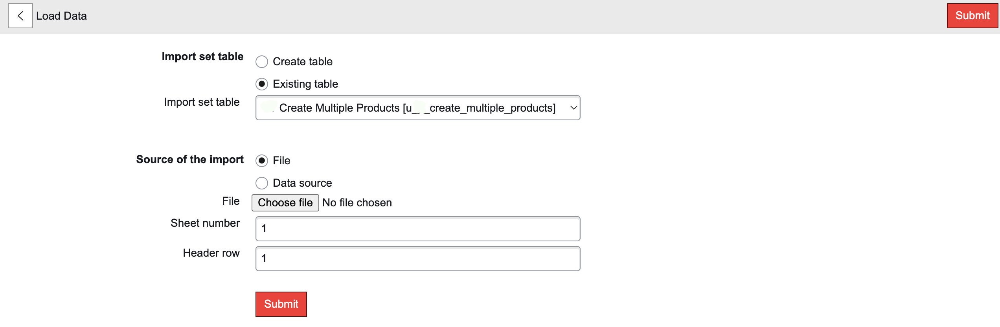
- Create a Transform Map 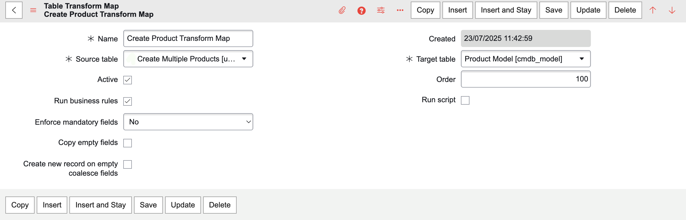
- Create a Field mappings as required 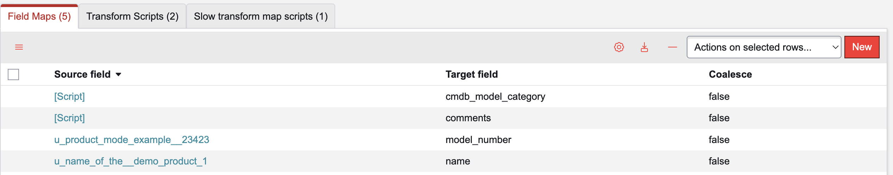
- Populate RITM Number in product's Comment 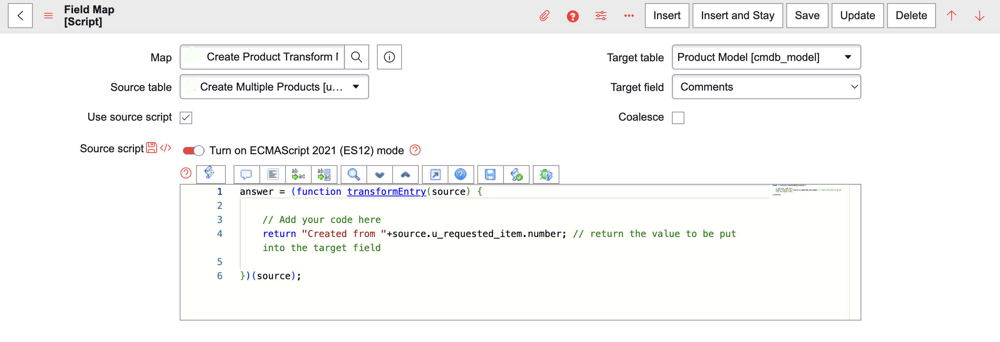
Transform Scripts
- onAfter Transform Script to create Sold Product after Product is created: If Accounts are mentioned in Excel, create Sold Products and attach them to the mentioned accounts. If Accounts are not mentioned, create Sold Products and attach them to a Default Account.
- onComplete Transform Script to create a link to display created Products and Sold Products
(function runTransformScript(source, map, log, target) {
var productSysId = target.sys_id.toString();
var productName = source.u_name_of_the__demo_product_1;
if (!productSysId || !productName) {
return;
}
// If accounts are specified
if (source.u_which_accoun_d_to_be_linked && source.u_which_accoun_d_to_be_linked.trim() !== '') {
var accountNames = source.u_which_accoun_d_to_be_linked.split(/\s*,\s*/);
var validAccounts = [];
for (var i = 0; i < accountNames.length; i++) {
if (isValidAccount(accountNames[i])) {
validAccounts.push(accountNames[i]);
}
}
var accountGr = new GlideRecord('customer_account');
accountGr.addQuery('name', 'IN', validAccounts);
accountGr.query();
while (accountGr.next()) {
createSoldProduct(productSysId, productName, accountGr.sys_id.toString(), accountGr.name.toString());
}
if (accountNames.length != validAccounts.length) { // Use generic account var
genericAccountSysId = gs.getProperty('kap.sold.product.generic.account.sys.id');
if (genericAccountSysId) {
var genericAccountGr = new GlideRecord('customer_account');
if (genericAccountGr.get(genericAccountSysId)) {
createSoldProduct(productSysId, productName, genericAccountSysId, genericAccountGr.name.toString());
}
}
}
} else {
// Use generic account
var genericAccountId = gs.getProperty('kap.sold.product.generic.account.sys.id');
if (genericAccountId) {
var
genericAccGr = new GlideRecord('customer_account');
if (genericAccGr.get(genericAccountId)) {
createSoldProduct(productSysId, productName, genericAccountId, genericAccGr.name.toString());
}
}
}
//Reusable function to insert a Sold Product
function createSoldProduct(productId, productName, accountId,
accountName) {
var soldProduct = new GlideRecord('sn_install_base_sold_product');
soldProduct.initialize();
soldProduct.product = productId;
soldProduct.account = accountId;
soldProduct.name = productName + ' - ' +
accountName;
soldProduct.insert();
}
function isValidAccount(accountName) {
var accountGr = new
GlideRecord('customer_account');
accountGr.addQuery('name', accountName);
accountGr.query();
if (accountGr.hasNext()) {
return true;
}
return false;
}
})(source, map, log, target);
(function runTransformScript(source, map, log, target /*undefined onStart*/ ) {
var rowGr = new GlideRecord(source.getTableName());
rowGr.addQuery('import_set', source.import_set);
rowGr.query();
if (!rowGr.next() || !rowGr.u_requested_item) {
return;
}
var ritmRef = rowGr.u_requested_item;
// Get Products
var productGr = new GlideRecord(target.getTableName());
productGr.addQuery('sys_created_by', 'system');
productGr.addQuery('comments', 'CONTAINS', ritmRef.number);
productGr.query();
var productSysIds = [];
while (productGr.next()) {
productSysIds.push(productGr.getValue('sys_id'));
}
// Get Sold Products by checking product.comments CONTAINS RITM number
var soldSysIds = [];
var soldGr = new GlideRecord('sn_install_base_sold_product');
soldGr.addQuery('sys_created_by', 'system');
soldGr.addEncodedQuery('productISNOTEMPTY');
soldGr.addEncodedQuery('product.sys_idIN' + productSysIds);
soldGr.query();
while (soldGr.next()) {
soldSysIds.push(soldGr.getValue('sys_id'));
}
if (productSysIds.length === 0 && soldSysIds.length === 0) {
return;
}
var baseUrl = gs.getProperty('glide.servlet.uri');
var commentText = '';
if (productSysIds.length > 0) {
var productListUrl = baseUrl + target.getTableName() + '_list.do?sysparm_query=sys_idIN' +
productSysIds.join(',');
commentText += 'Click <a href="' + productListUrl + '" target="_blank">here</a> to view the
created Products.\n ';
}
if (soldSysIds.length > 0) {
var soldListUrl = baseUrl + 'sn_install_base_sold_product_list.do?sysparm_query=sys_idIN' +
soldSysIds.join(',');
commentText += 'Click <a href="' + soldListUrl + '" target="_blank">here</a> to view the created
Sold Products.
';
}
var ritmGR = new GlideRecord('sc_req_item');
if (ritmGR.get(ritmRef)) {
ritmGR.comments = commentText;
ritmGR.update();
}
})(source, map, log, target);
Output
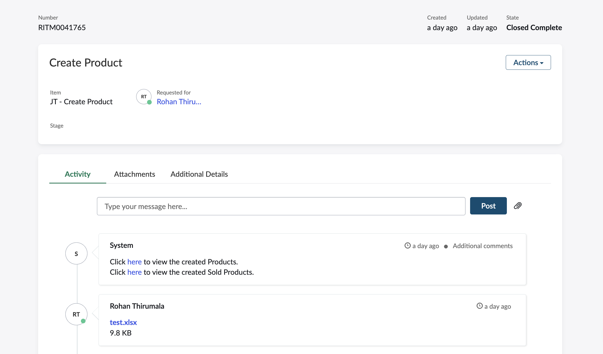- Created Products 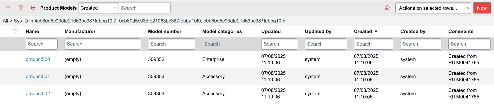
- Created Sold Products 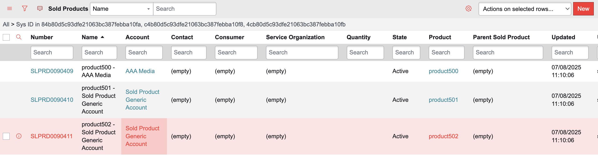